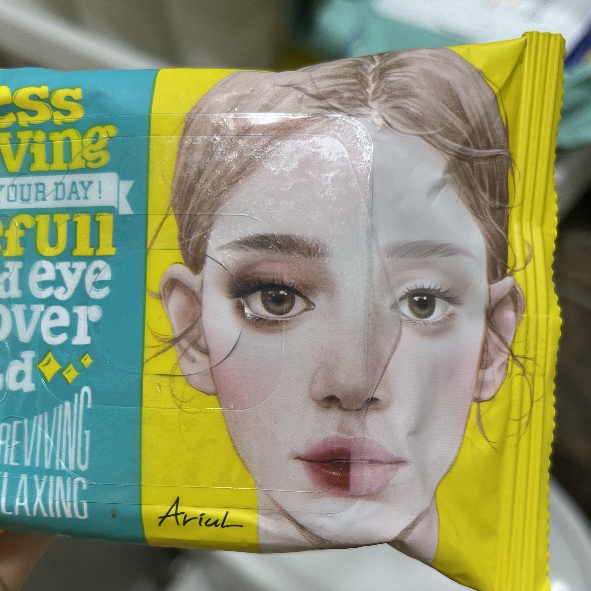
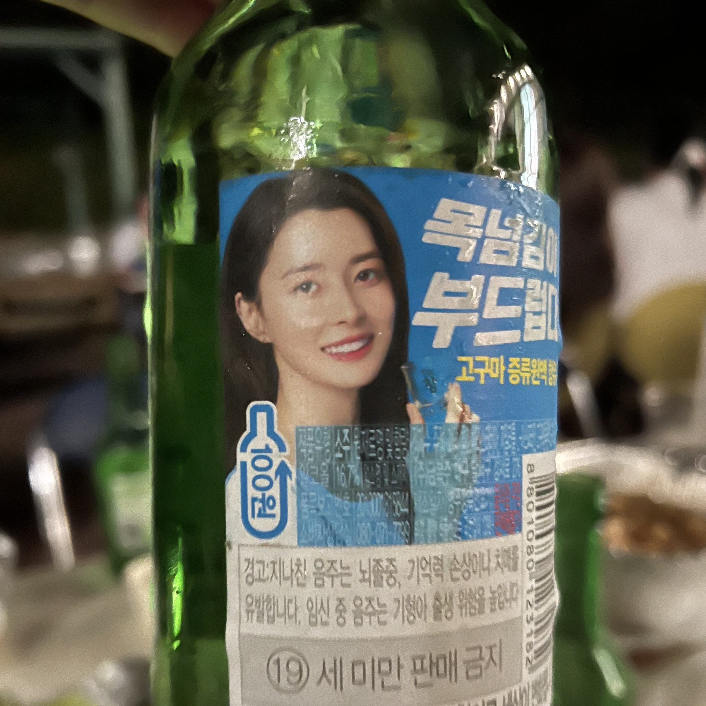
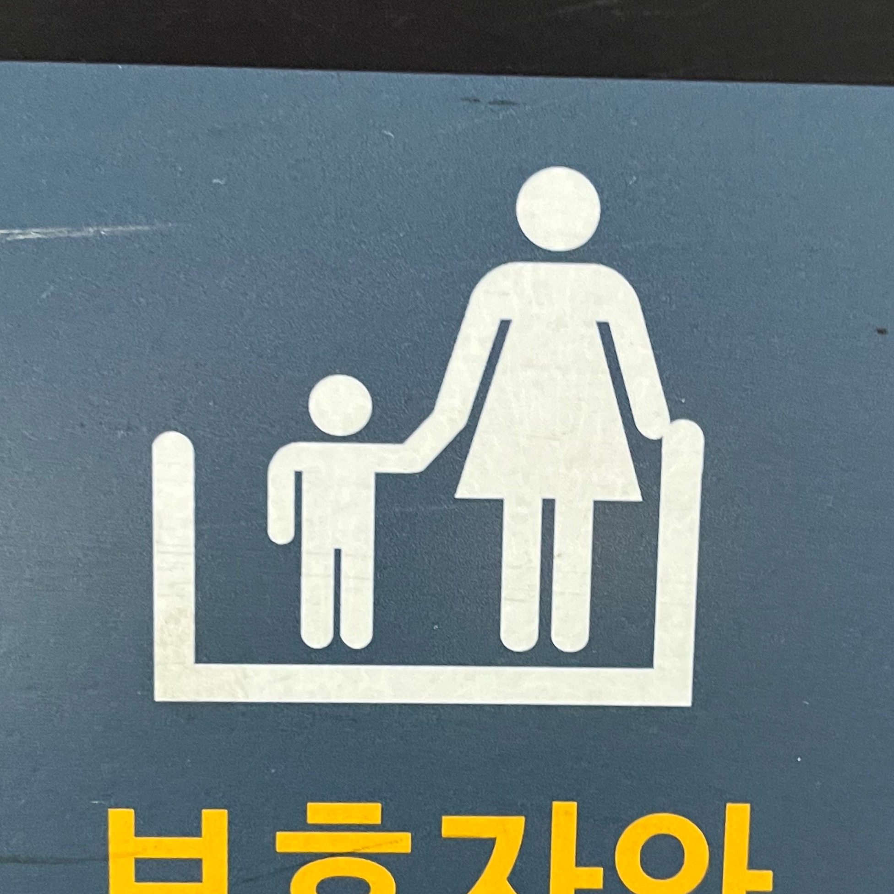

성별
* 성 역할 고정 관념, 성적 대상화 등
  우리가 일상생활에서 마주하는 여러 이미지에는 성 역할 고정 관념, 성적 대상화가 숨어있다. 이미지가 미치는 영향에 대해 생각해 보면서 성별에 대한 이미지를 찾아보았다. 여성이 육아를 하는 모습, 화장품과 화장품 광고에 여성의 이미지가 들어있는 모습, 집안일을 하는 제품 광고를 여성이 하는 모습, 스포츠 용품 광고를 남성이 하는 모습 등은 성 역할 고정 관념에 대한 이야기이다. 한 성별에 정해진 역할이 있다는 고정 관념을 생기게 할 수 있다. 또한 술 광고를 여성이 하는 모습, 광고나 포스터에서 관련 없는 노출을 여성이 하는 경우는 성적 대상화에 포함된다. 성 역할 고정 관념은 불평등과 특정 성별은 무엇을 할 수 없다는 생각을 낳을 수 있고 성적 대상화는 성차별을 강화시킬 수 있다고 생각한다. 성별에 대한 고정 관념을 깨고 다양한 역할에 대해 생각해 보아야 한다는 인식이 필요하다.
신체
* 미의 표준 등
우리는 흔히 이미지를 통해 몸매나 화장 방법 같은 것을 강조하는 것, 틀에 박힌 미에 대한 기준들을 볼 수 있다. 지하철 등에서 성형 광고를 보았을 때, 얼굴은 어떠해야 한다는 미의 기준을 정해두고 광고하고 있으며 그것에 맞추어야 예쁘다고 생각하게 한다. 또한 헬스 광고나 방송에서 몸매에 대한 기준을 정해놓고 그렇게 만들어 준다며 홍보하기도 한다. 이러한 기준들은 비현실적일뿐더러, 사람들에게 외모에 대한 강박증, 심리적으로 압박감 등 악영향을 미칠 수 있다고 생각한다. 또한 사람마다 모습이 다 다른 것은 당연한 일인데 기준에 맞지 못하는 사람들은 차별당할 수도 있다. 다양한 아름다움을 존중해야 하며 특정 미의 기준을 사람들에게 자꾸 강요하는 것은 좋은 일이 아니다. 자신의 기준에 따라 긍정적으로 살아가야 한다고 생각한다.